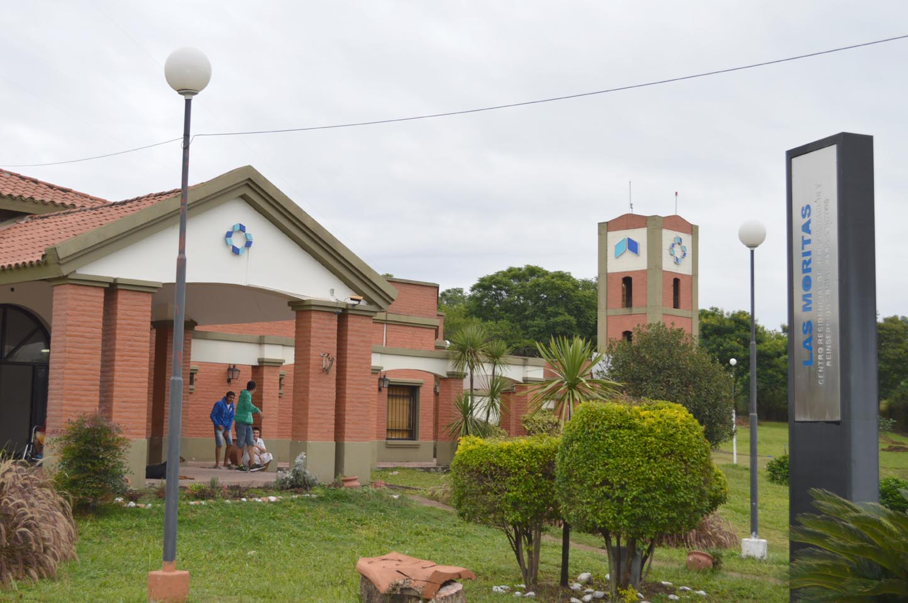

Hospitales de alto nivel
-
Hospital del Niño Jesús
-
Hospital Centro de Salud Zenón J. Santillán
-
Hospital Juan M. Obarrio
-
Hospital de Clínicas Nuestra Sra del Carmen
-
Hospital Ángel C. Padilla
-
Hospital de Clínicas Presidente Dr. Nicolás Avellaneda
-
Instituto de Maternidad y Ginecología Nuestra Señora de Las Mercedes
-
Hospital Eva Perón
-
Hospital Regional de Concepción “Dr. Miguel Belascuain”
-
Hospital de día Presidente Néstor C. Kirchner
-
Hospital General Lamadrid Monteros
-

Centro las Moritas